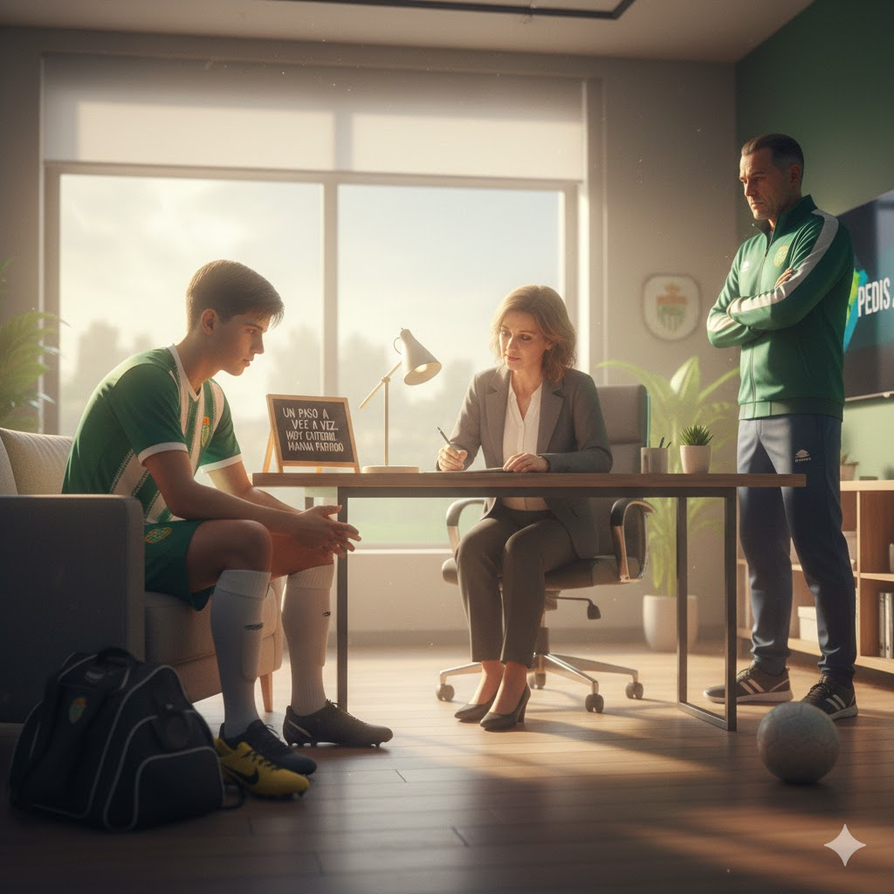

Diego Guevara 24128
Sistemas y tecnologias Web
Mi historia respecto a fuchibol
Pedís apoyo
Hablás con el staff del club y te ayudan a ordenar tu mente y poner todas las cosas donde deben de estar. Te dicen: "un paso a la vez, hoy entreno, mañana partido."
Vos te sentís mejor y volvés a lo tuyo: jugar. Fuchibol puro.
